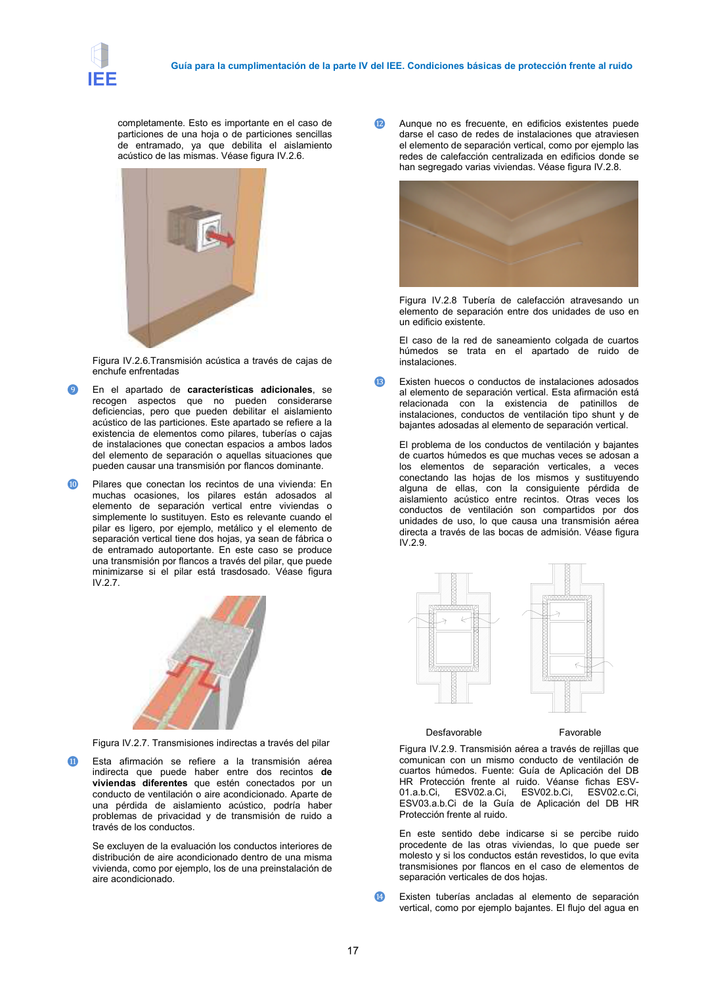

IEE 2016 · edición 2016-11-01 · capa guia
Documento GUIA-PDF-a5d4ef5252ba · SHA-256 del PDF 813669d3066c0ff79457d57b80b0512a4fbb248bc5db1f7baf473c369a064738
Página física 17 de 65.
Copia fiel del PDF fuente · Fuente oficial
Ficha de la disposición en la fuente oficial
Créditos y autoría en el PDF fuente. Reproducción con cita de fuente y autores.
Permiso literal: Se permite la reproducción del contenido total o parcial de esta Guía siempre y cuando se haga citando la fuente original.
Guía para la cumplimentación de la parte IV del IEE. Condiciones básicas de protección frente al ruido
Dirección y coordinación
Luis Vega Catalán
Mª Cristina Colomo Fernández
Eduardo González de Prado
Dirección General de Arquitectura, Vivienda y Suelo. Ministerio de Fomento
Mª Teresa Carrascal García
Instituto de Ciencias de la Construcción Eduardo Torroja. IETcc- CSIC
Autores
Mª Teresa Carrascal García
Amelia Romero Fernández
Mª Belén Casla Herguedas
Unidad de Calidad en la Construcción del Instituto de Ciencias de la Construcción Eduardo Torroja IETcc- CSIC
Se agradece la colaboración de
Belén Delgado Giménez
Fundación FIDAS
Alberto Esteban González
C.T.O. Estudios y proyectos – Gikesa
Giovanni Muzio
C.T.O. Estudios y proyectos
Francisco Labastida Azemar
Arquitecto, asesor CSCAE
Pedro F. Nogueira López
Universidad de A Coruña
Alejandro Sansegundo Sierra
Acústica SanSegundo
Esta Guía para la cumplimentación de la parte IV del IEE. Condiciones básicas de protección frente al ruido, nace en el marco del
convenio de colaboración llevado a cabo entre el Ministerio de Fomento y el Instituto de Ciencias de la Construcción Eduardo Torroja y
forma parte de la estrategia de este Ministerio de generar una serie de documentos de ayuda que faciliten la aplicación de la normativa
de la edificación y que en este caso concreto, ofrezca a los técnicos criterios para poder realizar una evaluación del estado inicial de las
edificaciones en lo referente a las condiciones acústicas de las viviendas existentes y plantear medidas que incrementen su confort
acústico.
En la redacción de este documento se ha utilizado algunos de los contenidos y de las figuras de la Guía de aplicación del DB HR
Protección frente al ruido. Dicha guía puede consultarse en:
http://www.codigotecnico.org/index.php/menu-documentos-complementarios/menu-guia-aplicacion-db-hr
Se permite la reproducción del contenido total o parcial de esta Guía siempre y cuando se haga citando la fuente original.
2Formato: Texto de la página (Markdown)
Guía para la cumplimentación de la parte IV del IEE. Condiciones básicas de protección frente al ruido 17 completamente. Esto es importante en el caso de particiones de una hoja o de particiones sencillas de entramado, ya que debilita el aislamiento acústico de las mismas. Véase figura IV.2.6. Figura IV.2.6.Transmisión acústica a través de cajas de enchufe enfrentadas ❾ En el apartado de características adicionales, se recogen aspectos que no pueden considerarse deficiencias, pero que pueden debilitar el aislamiento acústico de las particiones. Este apartado se refiere a la existencia de elementos como pilares, tuberías o cajas de instalaciones que conectan espacios a ambos lados del elemento de separación o aquellas situaciones que pueden causar una transmisión por flancos dominante. ❿ Pilares que conectan los recintos de una vivienda: En muchas ocasiones, los pilares están adosados al elemento de separación vertical entre viviendas o simplemente lo sustituyen. Esto es relevante cuando el pilar es ligero, por ejemplo, metálico y el elemento de separación vertical tiene dos hojas, ya sean de fábrica o de entramado autoportante. En este caso se produce una transmisión por flancos a través del pilar, que puede minimizarse si el pilar está trasdosado. Véase figura IV.2.7. Figura IV.2.7. Transmisiones indirectas a través del pilar ⓫ Esta afirmación se refiere a la transmisión aérea indirecta que puede haber entre dos recintos de viviendas diferentes que estén conectados por un conducto de ventilación o aire acondicionado. Aparte de una pérdida de aislamiento acústico, podría haber problemas de privacidad y de transmisión de ruido a través de los conductos. Se excluyen de la evaluación los conductos interiores de distribución de aire acondicionado dentro de una misma vivienda, como por ejemplo, los de una preinstalación de aire acondicionado. ⓬ Aunque no es frecuente, en edificios existentes puede darse el caso de redes de instalaciones que atraviesen el elemento de separación vertical, como por ejemplo las redes de calefacción centralizada en edificios donde se han segregado varias viviendas. Véase figura IV.2.8. Figura IV.2.8 Tubería de calefacción atravesando un elemento de separación entre dos unidades de uso en un edificio existente. El caso de la red de saneamiento colgada de cuartos húmedos se trata en el apartado de ruido de instalaciones. ⓭ Existen huecos o conductos de instalaciones adosados al elemento de separación vertical. Esta afirmación está relacionada con la existencia de patinillos de instalaciones, conductos de ventilación tipo shunt y de bajantes adosadas al elemento de separación vertical. El problema de los conductos de ventilación y bajantes de cuartos húmedos es que muchas veces se adosan a los elementos de separación verticales, a veces conectando las hojas de los mismos y sustituyendo alguna de ellas, con la consiguiente pérdida de aislamiento acústico entre recintos. Otras veces los conductos de ventilación son compartidos por dos unidades de uso, lo que causa una transmisión aérea directa a través de las bocas de admisión. Véase figura IV.2.9. Desfavorable Favorable Figura IV.2.9. Transmisión aérea a través de rejillas que comunican con un mismo conducto de ventilación de cuartos húmedos. Fuente: Guía de Aplicación del DB HR Protección frente al ruido. Véanse fichas ESV- 01.a.b.Ci, ESV02.a.Ci, ESV02.b.Ci, ESV02.c.Ci, ESV03.a.b.Ci de la Guía de Aplicación del DB HR Protección frente al ruido. En este sentido debe indicarse si se percibe ruido procedente de las otras viviendas, lo que puede ser molesto y si los conductos están revestidos, lo que evita transmisiones por flancos en el caso de elementos de separación verticales de dos hojas. ⓮ Existen tuberías ancladas al elemento de separación vertical, como por ejemplo bajantes. El flujo del agua en

Datos candidatos: compruebe celdas y notas en el PDF.